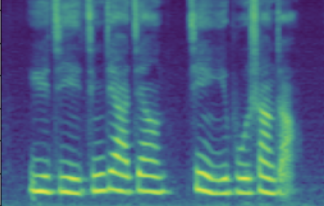
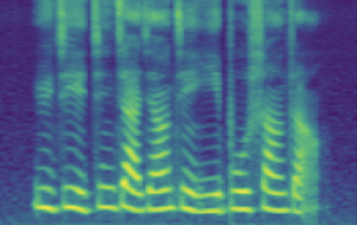
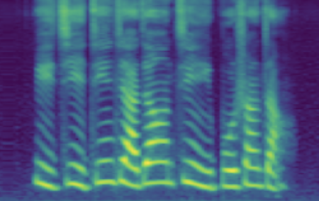
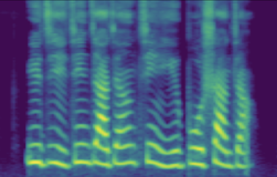

[Site Under construction] Supplementary Samples for
VoiceLens:
Controllable Speaker Generation & Editing with Flow
Arxiv: not yet available
Authors
- SHI, Yao (Wuhan University, Duke-Kunshan University)
- DING, Chen (SAMI Bytedance)
- XIA, Rui (SAMI Bytedance)
- HUANG, Chuanzeng (SAMI Bytedance)
- LI, Ming (Duke-Kunshan University, Wuhan University) ······ ming.li369@dukekunshan.edu.cn
Abstract
Many multi-speaker speech synthesis and voice conversion systems address speaker variations with an embedding vector. Modeling it directly allows new voices outside of training data to be synthesized. GMM based approaches such as Tacospawn are favored in past literature for this generation task, but have seen their limitations when difficult conditionings are involved.
In this paper, we propose VoiceLens, a semi-supervised flow-based approach to modeling speaker embedding distributions for multi-conditional speaker generation. VoiceLens invertiblely maps speaker embeddings into a combination of independent attributes and residual information. It allows new voices associated with certain attributes to be generated for existing TTS models, and attributes of known voices meaningfully edited. We show in this paper, VoiceLens displays unconditional generation capacity that is on par with Tacospawn while attaining higher controllability and flexibility when conditioned. In addition, we show synthesizing less noisy speech from known noisy speakers without re-training the TTS system is possible via solely editing their embeddings with a SNR conditioned VoiceLens model.
Method Overview
Figure 1 below is an illustrated overview of the proposed VoiceLens workflow. Given a trained Multispeaker TTS system, a set of known speaker embedding vectors (\(\mathbf{e}\)) and the speakers' partially labeled attributes (\(\mathbf{y}\)) (such as gender, age-group or general SNR level), a Normalizing Flow is trained in a semi-supervised manner to model the conditional distribution \(p(\mathbf{e}|\mathbf{y})\) of the speaker embedding conditioning on the modeled attributes. Multiple attributes are handled by partitioning the flow's base variable \(\mathbf{z}\) into multiple disjoint subspaces (assuming independence). Once trained, new speaker embeddings with desired attributes can be generated by first sampling from the appropriated prior distributions on \(\mathbf{z}\), then transforming the samples into \(\mathbf{e}\) by inversing the flow. Attributes of a known speaker embedding could be modified by first transforming its embedding into \(\mathbf{z}\), swapping in new values according to the prior distribution, then inversing the edited \(\mathbf{z}\) into \(\mathbf{e}\) with flow.

Experimental Setup
We used a Multispeaker VITS with speaker Look-Up-Table as our experimental TTS system. It was trained on DidiSpeech-2, a Mandarin Corpus containing around 1500 speakers. The TTS system was trained once and remains un-modified throughout our experiments. We modeled the speaker embedding distribution conditioning on the multi-label gender (female/male), age-group (child/adult) and SNR level (continuously distributed within [20,60] dB) with the proposed VoiceLens method.
Demo 1: Unconditional Generation
The following table presents, for each evaluation sentence, three synthesized utterances generated by the same Multi-speaker TTS system. They differ only in the synthesizer's input speaker embedding. For parallel synthesis, the speaker embedding of the original speaker to which the evaluation sentence belongs is provided as input. (As the case in standard multi-speaker TTS). For VoiceLens generated, the input embedding is unconditionally sampled from the trained VoiceLens model, representing a newly generated voice. For nearest known, the input embedding is selected as the embedding of the known speaker whose voice is the closest to the generated voice in terms of speaker verification cosine distance.
| Id | parallel synthesis | VoiceLens generated | nearest known |
| 1 | |||
| 2 |
Demo 2: Conditional Generation
The following table presents a series of conditional generation results obtained from the proposed model. For each row, a (gender-age) condition is specified before sampling in \(\mathbf{z}\). After an instance of \(\mathbf{z}\) is sampled, the dimensions related to SNR modeling (denoted by \(z_{snr}\) here) are set as values from the range(20, 60, 10), forming the columns in table. We present synthesized utterances for voices generated under the above stated conditions, and report SNRs estimated from these samples. It can be observed that the actual SNR measured post-hoc closely follows the controlling conditions (\(z_{snr}\)) set before generation.
Left click on the mel-spectrogram images to play samples!
| condition | \(z_{snr}\) | 20 | 30 | 40 | 50 | 60 |
| female child | SNR/dB | 23.501 | 31.815 | 36.330 | 42.908 | 53.411 |
| Melspec |  |
 |  |  |  | |
| male child | SNR/dB | 23.501 | 31.815 | 36.330 | 42.908 | 53.411 |
| Melspec | |
|||||
| female adult | SNR/dB | 23.501 | 31.815 | 36.330 | 42.908 | 53.411 |
| Melspec | |
|||||
| male adult | SNR/dB | 23.501 | 31.815 | 36.330 | 42.908 | 53.411 |
| Melspec | |
Demo 3: Known Speaker Editing
3.1: Flipping Categorical Attributes (gender-swapping)
The following table presents
The following table presents synthesis results based on real and edited speaker embeddings as descirbed by Figure 1. For each row, we choose a evaluation sentence of a known speaker, examine the recording and a parallel synthesis result.
| case | recording | synthesized | flip gender | flip age-group |
| 1 | ||||
| 2 |